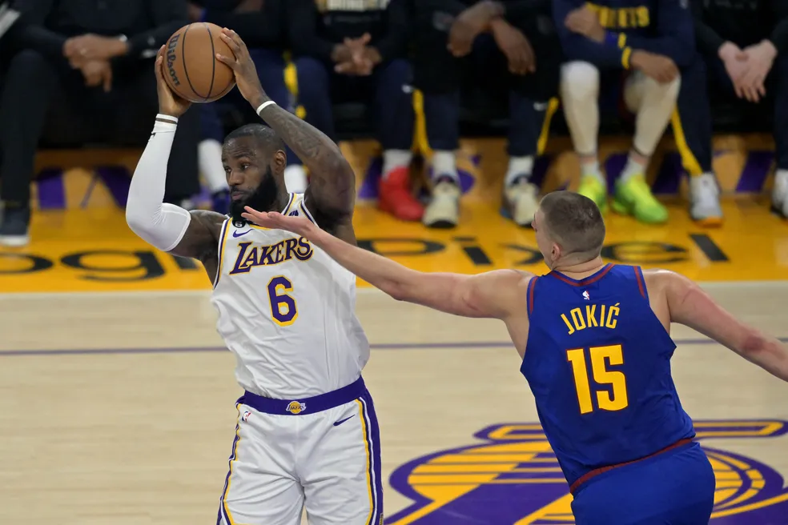

NBA
LeBron rasga elogios ao rival Jokic: "Sabia que ele seria espetacular"
Sérvio, que foi o MVP da final, liderou os Nuggets na vitória contra os Lakers por 4 a 0 na decisão da Conferência Oeste.
Sérvio, que foi o MVP da final, liderou os Nuggets na vitória contra os Lakers por 4 a 0 na decisão da Conferência Oeste.
Jogador preocupou os fãs ao postar mensagens confusas em suas redes sociais.
Tricolor vence o jogo 1 da decisão com uma excelente atuação do pivô Siewert.
Item usado pelo astro na semifinal dos Jogos Olímpicos de Barcelona 1992 foi vendido em leilão nesta quinta-feira. Equipe era apelidada de "The Dream Team" por reunir muitos craques.
A Seleção Brasileira masculina já conhece um dos seus desafios na preparação para a Copa do Mundo de Basquete.